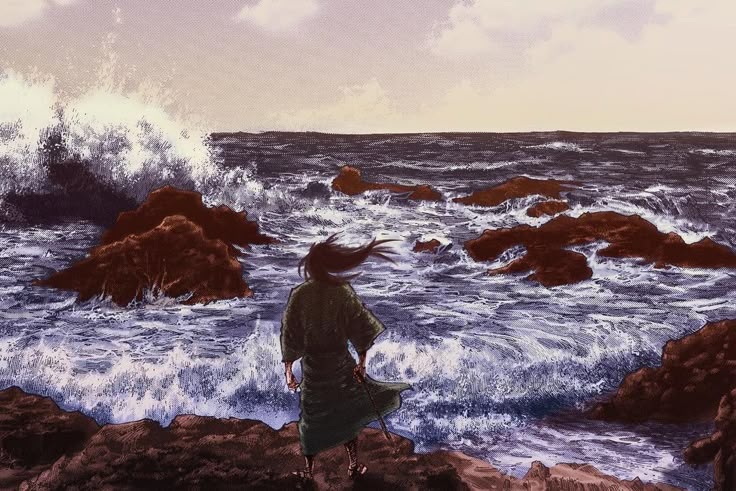

O caminho do silêncio
O verdadeiro crescimento não é barulhento. Não se mostra. Não busca aplausos. É solitário como o nascer do sol entre as montanhas.
No caminho da espada — ou da vida - há um ponto em que o conflito externo cessa e começa a verdadeira batalha: vencer a si mesmo.
O silêncio não é ausência. É presença plena. É quando finalmente escutamos aquilo que sempre tentamos calar.
"Há mais verdade no silêncio do que nas palavras. Quando calamos, ouvimos a nós mesmos."
.jpg)
A Ilusão da Força
Quantos confundem força com brutalidade?
A verdadeira força é o domínio de si.
Não é quem mais vence lutas que é mais forte — é quem as evita, porque já venceu a si mesmo.
Musashi não buscava adversários, mas espelhos.
E quanto mais vencia, mais percebia que a força era um fardo, até que ela se tornasse leve... e, por fim, desnecessária.
"Ser forte não é cortar o outro. É não precisar da lâmina."

Solidão e Liberdade
A jornada do guerreiro é solitária porque poucos suportam olhar para dentro.
A multidão distrai, mascara, embriaga.
Na solidão, somos confrontados com quem realmente somos — e poucos aceitam esse encontro.
Mas é só nesse silêncio que nasce a liberdade verdadeira: ser sem depender, existir sem provar, viver sem se esconder.
"Estar só não é estar perdido. Às vezes, é estar finalmente em si."

Vazio
O vazio é temido, mas é nele que nascem as possibilidades.
Uma xícara só serve se estiver vazia.
Assim é a mente do aprendiz: aberta, receptiva, disposta a esquecer para aprender de novo.
O guerreiro que se agarra às certezas já perdeu. O que se despe de tudo, torna-se invencível — pois nada o prende.
"Quando nada te preenche, tudo cabe em você."